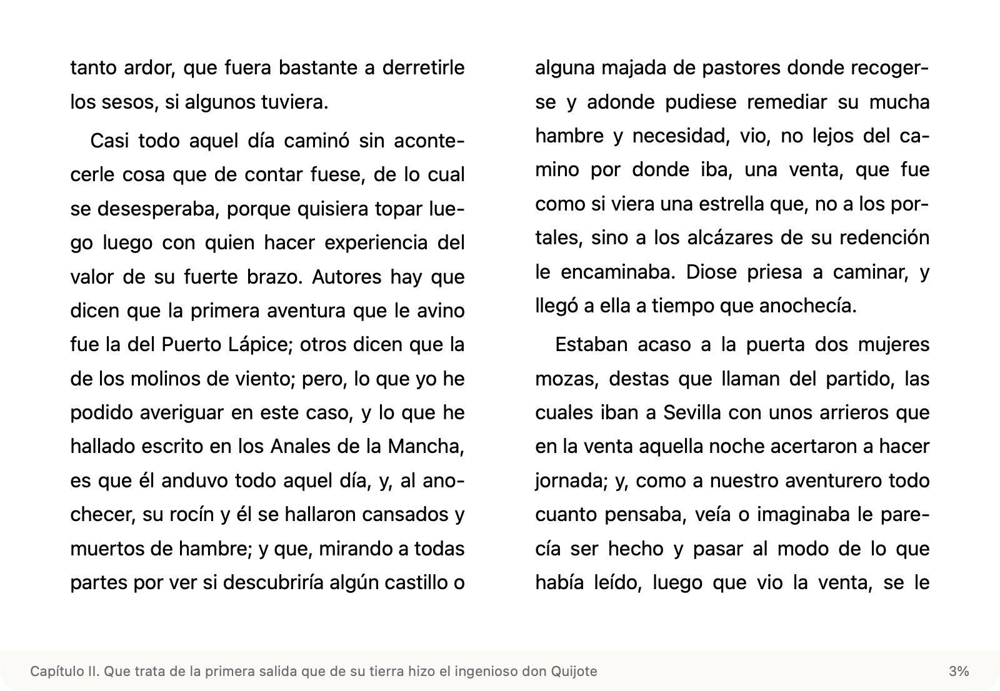
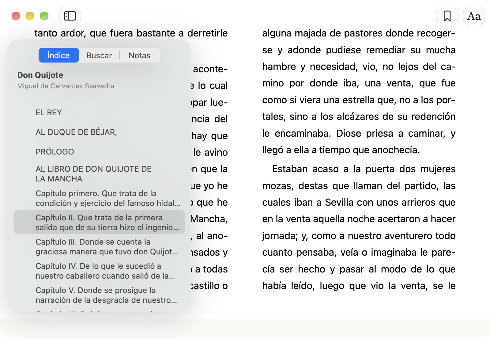

Lector de ebooks de código abierto para Mac · EPUB · MOBI · AZW3 · PDF · FB2 · CBZ
Doble clic para leer. Cierra y listo.
Un libro, una ventana. Sin estantería, solo tu página.
Lector de ebooks de código abierto para Mac · EPUB · MOBI · AZW3 · PDF · FB2 · CBZ
Un libro, una ventana. Sin estantería, solo tu página.

Leaf es un lector de ebooks gratuito y de código abierto para Mac. Haz doble clic en un archivo EPUB, MOBI, AZW3, PDF, FB2 o CBZ para leerlo; cierra la ventana y Leaf se cierra. Sin biblioteca, sin copias, sin cuenta. Recuerda dónde te quedaste. App nativa en SwiftUI, unos 5 MB, macOS 15 o posterior. Sin relación con Amazon.
Sin biblioteca. Sin copias. Sin cuenta.
Se abre como un documento. Se cierra cuando la cierras.
Incluso si renombras o mueves el archivo.
Menús reales, atajos, Consultar y Traducir con el diccionario de macOS en español. Todo Mac.
Todo está en los detalles.
Estimado según lo rápido que lees.
Fuentes, grosor, espaciado y ancho. División de palabras automática y texto justificado, como en un libro impreso. Cinco ajustes predefinidos, más los tuyos.
Haz clic en la llamada. La nota aparece ahí mismo.
⌘F para buscar en el libro. ⌘L para ir a cualquier parte.
Resaltados, notas y marcadores. Exporta a Markdown o al formato de Kindle. Consulta una palabra en un solo paso.
EPUB, MOBI, AZW3, PDF, FB2 y CBZ. Sin conversión.
Papel, sepia u oscuro. Ocho idiomas, incluido el español.
Pulsa ⌘T. Flota sobre la página. Nada se mueve.

Readest hace más. Apple Books viene con tu Mac. Calibre es el mejor gestionando colecciones. Leaf hace una sola cosa: abrir un libro.
| Leaf | Readest | Apple Books | Calibre | |
|---|---|---|---|---|
| MOBI · AZW3 | ✓ (sin DRM) | ✓ | No compatible | ✓ |
| Abrir un archivo | En su sitio, sin biblioteca | En su sitio, añadido a su biblioteca | Importado a su biblioteca | Biblioteca primero; el visor puede abrirse solo |
| Qué conserva | Posición de lectura, resaltados y marcadores, en su propia carpeta | Entrada de biblioteca: título, ruta, portada | Una copia en su biblioteca | Base de datos de la biblioteca |
| Al cerrar la ventana | La app se cierra | Sigue abierta | — | — |
| Resaltados y notas | ✓ Exporta Markdown y formato Kindle | ✓ | ✓ | ✓ |
| Otras plataformas | Solo Mac | iOS · Android · Windows · Linux · Web | iPhone · iPad | Windows · Linux |
| Interfaz | Nativa (SwiftUI) | Web (Tauri) | Nativa | Qt |
| Tamaño de descarga | Unos 5 MB | Unos 67 MB | Incluido en macOS | Unos 350 MB |
| Requiere | macOS 15+ | macOS 12+ | — | macOS 14+ |
| Precio · Licencia | Gratis · GPL-3.0 | Gratis, nube de pago opcional · AGPL-3.0 | Gratis · propietario | Gratis · GPL-3.0 |
Readest comprobado el 30 de octubre de 2026: versión 0.12.16 y prueba de la app para macOS. Apple Books y Calibre comprobados el 3 de octubre de 2026 con la ayuda de Apple Books, calibre 9.15.0 para macOS y el manual del visor de calibre.
Leaf no está notarizado por Apple. Permítelo una vez al abrirlo por primera vez.
Abre Leaf.dmg y arrastra Leaf a la carpeta Aplicaciones.
Haz doble clic en Leaf. Cuando macOS diga que no puede verificar el desarrollador, haz clic en Aceptar.
En Ajustes del Sistema › Privacidad y seguridad, baja y haz clic en Abrir de todos modos.
Requiere macOS 15 o posterior. Los libros con DRM, como las compras de la Kindle Store, no se pueden abrir.
Las manos siguen en el teclado.
| Pasar página | ←→Space |
| Índice | ⌘T |
| Buscar en el libro | ⌘F⌘G |
| Ir a un porcentaje o posición | ⌘L |
| Ajustes | ⌘, |
| Texto más grande / más pequeño | ⌘=⌘- |
| Tamaño real | ⌘0 |
Dudas habituales sobre instalar y usar Leaf.
Instala Leaf y haz doble clic en el archivo en el Finder, o haz clic derecho y elige Abrir con › Leaf. El archivo debe estar sin DRM.
Leaf abre archivos EPUB, MOBI y AZW3 sin DRM, además de PDF, FB2 y CBZ, cada uno en su ventana. Muestra el tiempo restante según tu velocidad de lectura, números de posición, ajustes tipográficos, notas al pie en su sitio y búsqueda en el libro; puedes resaltar, tomar notas, marcar páginas y exportarlo todo. Cierra la ventana y se cierra. Sin tienda, sin cuenta.
Readest es multiplataforma, con biblioteca, sincronización y lectura en voz alta. Leaf es solo para Mac y hace menos a propósito: sin biblioteca, sin sincronización, y se cierra al cerrar el libro. Guarda tu posición, resaltados y marcadores en su propia carpeta, nunca en el archivo del libro. Unos 5 MB frente a 67 MB.
Sí. Leaf es gratuito y de código abierto bajo la GPL-3.0.
Leaf no está notarizado por Apple. Ábrelo una vez, cierra el aviso y ve a Ajustes del Sistema › Privacidad y seguridad y haz clic en Abrir de todos modos. Solo hace falta una vez.
Solo archivos sin DRM. Los libros comprados en la Kindle Store suelen tener DRM y Leaf no puede abrirlos.
No. Leaf es un proyecto independiente de código abierto, sin relación con Amazon. Abre archivos EPUB, MOBI y AZW3 sin DRM en tu Mac, sin tienda ni cuenta.
No. Leaf abre los libros donde están, sin importarlos ni copiarlos. Leaf solo guarda dónde te quedaste en cada libro; como cualquier app de documentos de Mac, macOS muestra los archivos recientes en Archivo › Abrir reciente.